1. Estructura administrativa de una empresa agropecuaria
1.1 Metodologías administrativas
Para obtener los resultados planteados en la misión agroempresarial, se debe diseñar una metodología administrativa que, mediante un orden estructural, facilite la consecución de las metas propuestas; organizando las funciones y actividades de planeación, organización, ejecución y control, de acuerdo con el organigrama diseñado para tal fin. Cumpliendo con las directrices de directivos y ayuda de sus funcionarios donde controlen todos sus procesos de forma eficiente y eficaz, para que en un tiempo prudencial alcancen las metas y objetivos propuestos.
En el siguiente gráfico estructural se resume una metodología administrativa:
1.2 Actividades administrativas
Por otra parte, en el sector agropecuario la organización interna de una empresa, se hace principalmente teniendo en cuenta las actividades funcionales o de importancia en su proceso productivo. Normalmente, son visibles en los organigramas de la empresa los trabajadores encargados de la administración de la empresa agropecuaria y las estrategias administrativas que facilitan el cumplimiento de los objetivos, de acuerdo a los recursos y procedimiento técnico. Las actividades técnicas se agrupan en dos, las que se dedican a la parte agrícola y las que lo hacen a las actividades pecuarias, las cuales conforman un conjunto denominado “producción agropecuaria”. De allí que cada profesión realiza un enfoque propio para la organización de la empresa y a su vez divide los campos de la administración en tareas específicas.
Es de notar que todas las actividades de planeación, administración, producción, mercadeo y finanzas de una empresa del sector agropecuario, deben estar articuladas y trabajar en coordinación de tal forma que el producto de una, sea el insumo de la otra y así sucesivamente.
Para desarrollar la función y control empresarial, el área que tiene mayor jerarquía y responsabilidad es la administrativa. De allí que el funcionario responsable de esta área debe contar con experiencia técnica y conocimientos relacionados con el proceso productivo a desarrollar. Igualmente, es el responsable de diseñar, planear y ejecutar los recursos dispuestos para cada sistema productivo, ya sea este agrícola o pecuario. También está implicado en la selección de insumos, maquinaria, equipos, mano de obra, insecticidas, herbicidas, fertilizantes, alimento concentrado, ensilaje, henolaje y otros que sean necesarios para el proceso productivo.
El administrador de la empresa agropecuaria utiliza la información obtenida en los indicadores de eficiencia de la producción, para ir realizando los ajustes necesarios en las actividades de manejo, sanidad, alimentación, instalaciones, equipos, control de malezas, control de roedores y demás.
Es función del administrador contar con información actualizada de precios y costos, con el propósito de tomar decisiones administrativas de mejora continua, al conocer las habilidades para analizar el mercadeo. Todo esto, es favorable para la empresa, ya que se pueden comprar insumos a menor precio sin perder su calidad y establecer estrategias de venta de los productos con buenos precios y en épocas de demanda componentes esenciales para una administración eficiente.
El manejo de las finanzas y la administración financiera constituyen otra área importante, en la cual el administrador de empresas agropecuarias debe tener amplia experiencia. Las decisiones de finanzas son básicamente aquellas relacionadas con la disposición y uso de dineros dispuestos para la comprar de bienes y servicios necesarios para el cumplimiento de los objetivos de la empresa agropecuaria. Exceptuando cuando el productor es el propietario - administrador de los recursos y la adquisición de insumos productivos tales como: tierra, maquinaria, equipos y mano de obra, que requieren del desembolso de dinero.
1.3 Recursos
En todo proceso productivo del sector agropecuario, se requiere la provisión de recursos específicos que cumplan y ayuden a efectuar los objetivos y metas propuestas en la planeación para desarrollar el proceso productivo.
En el siguiente gráfico se describen los recursos empleados en actividades agropecuarias clasificadas en cuatro grupos así:
1. Recursos naturales
También se conoce como medio ambiente y es considerado como el elemento físico y biológico del sistema, conformado por la tierra, el agua, el aire, la luz, el suelo con características propias de vegetación y nutrientes naturales de acuerdo al lugar geográfico, clima y condiciones climáticas variables basadas al medio de tenencia de la tierra, ya sea propia, en arriendo o comodato etc.
2. Recursos humanos
Como su nombre lo dice, es el potencial humano que es fuente de trabajo de la empresa y está al servicio para el desarrollo de su actividad económica y requiere de una permanente interrelación con la organización de la sociedad, las relaciones de la empresa con el Estado y las relaciones del trabajador con el patrono.
3. Recursos de capital
Son todo los bienes tangibles e intangibles que constituyen el patrimonio de la unidad productiva.
4. Recursos tecnológicos
Están relacionados con los avances en ciencia y tecnología que puede ser aplicable dentro de sus procesos productivos. En la actualidad es un factor relevante estar a la vanguardia de los nuevos conocimientos y la demanda de recursos tecnológicos es indispensable, ya que se requiere optimizar beneficios y minimizar dificultades. El sector agropecuario es un sector en el cual las tecnologías de información y la comunicación están abriéndose espacio, aunque no con la velocidad esperada al ser comparado con otros sectores de la economía.
En el siguiente gráfico se observan algunos ejemplos:
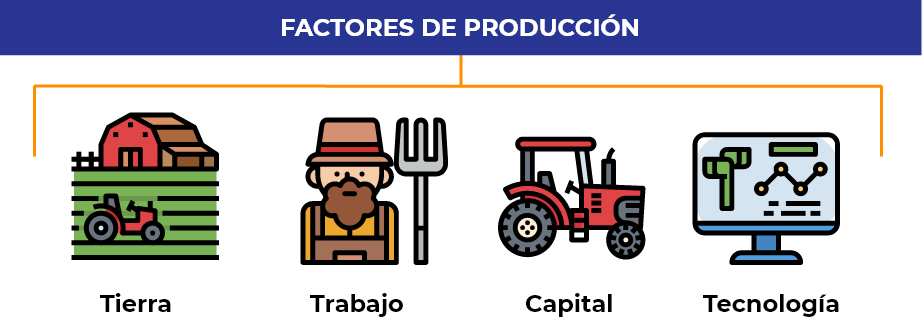1.4 Inventarios
Los inventarios en la producción agropecuaria poseen características particulares, ya que son los encargados de relacionar de forma detallada, ordenada y valorativa todos los elementos que componen el patrimonio de la empresa en un momento determinado. Un inventario se caracteriza por ser detallado y describir las características de cada uno de los elementos que conforman el patrimonio de la empresa.
Los inventarios forman parte de los activos de una empresa y se clasifican en circulante, diferido y fijo. A continuación, se describe cada uno de ellos:
Representa la liquidez de la empresa, ya que estos activos se pueden convertir en efectivo en un corto plazo.
Son posesiones o inversiones de la empresa que no se pueden convertir en efectivo en el corto plazo.
Es un bien de una empresa, ya sea tangible o intangible. No puede convertirse en líquido a corto plazo, ya que normalmente son necesarios para el funcionamiento de la empresa y no se destinan a la venta, como bienes inmuebles, maquinaria, material de oficina, etc.
Como se mencionó anteriormente, en una explotación agropecuaria los inventarios se dividen y subdividen según sea su actividad económica y función dentro de la unidad productiva.
Como ejemplo se pueden enunciar los insumos destinados a:
Papel, tinta, ganchos, etc.
Fertilizantes, alimento concentrado, semillas, etc.
Aceite, repuestos para las maquinarias, combustibles, repuestos para el sistema de riego, etc.
Por otra parte, los cultivos en desarrollo y los semovientes dentro de unidades productivas se consideran parte del inventario, ya sea como activo fijo o activo circulante.
Manejo del inventario
Un adecuado manejo de los inventarios permite optimizar las actividades de la empresa agropecuaria, además de conocer las existencias en bodega, lugar de asignación, cantidad requerida y disposición, para así realizar la gestión correspondiente de compra de insumos faltantes. Se debe llevar un buen manejo de inventarios de ingreso y salida de los insumos, fecha, ficha técnica, presentación, etc. Esta información se puede llevar en registros manuales o por medio de software donde se facilite el trabajo siendo más eficiente.
1.5 Programación
La programación o planeación es el mecanismo articulado que le permite a una organización ofrecer soluciones a las dificultades diarias que se presentan en su empresa. La programación de actividades en el sector agropecuario es secuencial, puesto que una vez analizada la estructura organizacional se debe definir el proceso de planeación operativa, el cual inicia desde la estructura de procedimientos y procesos para proceder con la disposición de recursos que serán ejecutados en el proceso productivo.
Dentro de la planeación operativa que está destinada a proveer los recursos e insumos que se requieren para ser ejecutados en cada una de las etapas del proceso productivo, está la planeación de actividades; las cuales se pueden programar de acuerdo al tiempo estimado y las características de su entorno, como las siguientes:
Corresponde al periodo que supera un año, la finalidad es delimitar los tipos de productos, la calidad, el precio y la oferta del producto en nuevos nichos de mercado que la empresa pretende incursionar.
Se determina de acuerdo al tipo de producto y su ciclo productivo se calcula para un periodo de 6 a 18 meses. La finalidad es la misma que la programación a largo plazo.
Como característica general se define un rango que comprende desde un día a seis meses y si es necesario, este se puede ir incrementando semanalmente. En la planificación a corto plazo se establecen claramente los requerimientos de insumos y labores necesarias para realizar un proceso productivo determinado.
Como resumen general, se puede inferir que, la programación de actividades es un proceso fundamental que incorpora la misión institucional. Proceso que se debe realizar en todos los niveles de la empresa y con el que se pueden tomar decisiones dentro de un plan de mejora continua. Este proceso surge del análisis de la información recopilada en la planeación operativa y se desarrolla durante todo el ciclo productivo para alcanzar las metas y objetivos propuestos en el plan de acción, con el que se debe dar estricto cumplimiento del cronograma de trabajo diseñado para obtener los productos deseados, de acuerdo al ciclo productivo establecido, a las cantidades proyectadas, dentro del calendario previsto y acorde con costos de producción calculados. La planificación permite interactuar con factores ambientales, de mercado, sociales y tecnológicos, para así lograr el propósito productivo siendo económicamente rentable y poder visualizar su futuro a corto y mediano plazo.
El fortalecimiento empresarial se logra mediante una adecuada planificación de actividades que permiten a los funcionarios ser más eficientes y le facilitan realizar una mejora continua en cada una de los ciclos productivos; contribuyendo al desarrollo empresarial, minimizando riesgos, optimizando recursos y tiempo. Con la participación e integración de elementos funcionales de la empresa, se deben tener en cuenta:
Elemento fundamental de la empresa que define la meta a donde se pretende llegar durante un periodo determinado.
Son acciones específicas que permiten a la empresa dirigirse hacia un fin y facilita la utilización adecuada de los recursos para el logro de las metas.

Son las medidas y procedimientos que se adoptan para dirigir las actividades funcionales de la empresa, en aspectos generales para tomar decisiones acertadas en cumplimiento de los objetivos propuestos.
Es el proceso que define la empresa para la realización secuencial de actividades dirigidas al logro de los objetivos.
Es la herramienta fundamental de la empresa con la que se indica cuáles fueron son ingresos y gastos y así saber cuánto se requiere para cumplir las metas planteadas.
Están diseñados para la planeación operativa y para la realización ordenada de actividades descritas en cada ciclo productivo, que son direccionados a la realización de un trabajo.
El propósito de una planeación es conseguir la mayor eficiencia en el proceso productivo, obtener la mayor cantidad de productos proyectados en el tiempo estimado y a bajo costo, sin desconocer las características de los productos a comercializar. En el sector agrícola se puede evidenciar más fácil este cambio de programación, ya sea al iniciar un nuevo cultivo, con una semilla mejorada o en el cambio de fechas de inicio del ciclo productivo. Por ejemplo, se define un cronograma que sea a mediano plazo. Para lograr este propósito se debe establecer en la planificación de producción, que al momento de la próxima cosecha se agregue anualmente a los nuevos ciclos un 50% de semilla nueva, hasta llegar en dos años al cambio total de la nueva variedad, realizando las labores de manejo, mano de obra requerida, insumos necesarios y la maquinaria a utilizar para llevar a cabo dicha labor; la cual se tiene establecida en las actividades técnicas de manejo del cultivo.
1.6 Asignación de responsabilidades
La asignación de responsabilidades está definida claramente dentro de la estructura organizacional de la empresa, en la que se describe jerárquicamente en el organigrama el grado de responsabilidad que se debe asumir de acuerdo a su nivel ocupacional y las funciones a desarrollar durante su permanencia en la empresa.
En el caso de la empresa agropecuaria cuya finalidad es producir alimentos, se debe tener presente que se asignan responsabilidades puntuales por línea de producción y durante todo el ciclo productivo, con la interacción de todos los recursos disponibles y descritos anteriormente en el tema de funciones administrativas. Con esta interacción se logra el cumplimiento de metas, obteniendo la cantidad de productos deseados y satisfacer los requisitos de calidad del producto a bajo costo.
1.7 Plan de acción
El plan de acción de la empresa agropecuaria después de haber analizado la estructura organizativa, permite identificar las necesidades esenciales de la empresa y justificar la inversión de sus recursos en áreas que requieren de insumos para completar con eficiencia su ciclo productivo, acorde con el plan de acción, las metas y los objetivos de la empresa.
Si bien se han señalado algunos criterios de referencia para la gestión de operaciones agropecuarias, es posible apreciar que en definitiva la operación de un sistema productivo es un problema de análisis de información y toma de decisiones. Una buena administración de un sistema productivo dependerá de los planes que se elaboren en la explotación, del sistema de control que permita conocer efectivamente lo que ocurre y del criterio que se posea para tomar decisiones ante cambios sean al interior o fuera del sistema.
Dentro del plan de acción de una empresa agropecuaria se debe realizar cambios y ajustes permanentemente, que muchas veces interfieren con el cumplimiento de los objetivos y metas planificadas y pueden ser de diversa índole, tales como fallas en los equipos, errores humanos, errores en la dosificación de insumos, el ataque de plagas o enfermedades, etc. Por ello, es necesario poseer estrategias de mejora que den solución rápidamente a las anomalías presentadas dentro de una explotación agropecuaria.
2. Escenarios de mercadeo para productos agropecuarios en negocios verdes
2.1 Estructura organizacional
En el sector agropecuario existen diversos lugares denominados mercado, los cuales son utilizados para la comercialización de los productos provenientes de la unidad productiva y hacen parte del sector primario o extractivo. El término mercado se puede entender como el conjunto de consumidores que comparten una necesidad de un producto determinado que satisface sus necesidades o requerimientos y está dispuesto a pagar por el bien. Por otra parte, se puede inferir que existe un conjunto de productos sustitutivos, que satisfacen la misma necesidad específica del grupo de compradores potenciales.
La estructura organizativa del departamento de mercadeo y/o marketing de una empresa, puede variar según su tamaño, existiendo con ello las denominadas Mipymes (pequeñas empresas), medianas y grandes empresas. Las pequeñas empresas pueden tener uno o dos empleados de marketing, mientras que las organizaciones más grandes cuentan con un departamento de marketing.
Las funciones de este departamento se resumen en:

Analizar nuevos hábitos y tendencias de los consumidores.
Estudiar a la competencia.
Observar la evolución de la demanda.
Detectar nuevas necesidades de los clientes.
Estudiar oportunidades y amenazas del mercado.
Crear una ventaja competitiva sostenible.
2.2 Planeación estratégica
Es una herramienta de gestión que permite establecer el quehacer y el camino que debe seguir la empresa para alcanzar las metas previstas en el departamento de mercadeo, frente a los constantes cambios y exigencias de su entorno.
En una empresa se distinguen tres fases fundamentales que son elementos fundamentales para diseñar una estrategia de planeación y crear acciones de mejora en cada una de ellas. Estas son: la producción, la distribución y el consumo. El término distribución se identifica como cambio o transferencia de bienes y se asimila a los de mercadeo o comercialización; por tanto, se puede señalar que el mercadeo es la segunda fase del proceso productivo de los bienes agropecuarios. Estas tres fases se desarrollan en forma sucesiva, existiendo una interrelación entre ellas y una estrecha vinculación entre las dos primeras, a tal punto que es difícil establecer dónde termina la producción y dónde empieza el mercadeo.
En el proceso de planificación y ordenamiento productivo agropecuario, la UPRA viene incorporado los aspectos del mercado mediante el análisis de las variables e indicadores relevantes de la oferta y demanda interna y externa, con el fin de orientar la producción agroalimentaria del país de manera competitiva, aprovechando las ventajas comparativas del suelo rural colombiano y los acuerdos y tratados de libre comercio que Colombia ha firmado con varios países de mundo. (UPRA, 2020)
2.3 Diagnóstico
Las actividades comerciales realizadas por cualquier empresa en el sector primario, buscan obtener primordialmente un beneficio económico; cuya finalidad es aumentar su capital social y optimizar su capacidad competitiva en el mercado, produciendo alimentos de excelente calidad que generan ingresos económicos que le permiten su funcionamiento y permanencia en el mercado. Cada empresa tiene su propia identidad y desarrolla sus actividades, de acuerdo a los requerimientos técnicos, administrativos y comerciales, para dar cumplimento a los objetivos y metas propuestas en su organigrama empresarial
En resumen, se puede argumentar que una actividad empresarial es toda acción que se realiza con el propósito de producir y comercializar algún tipo de producto, generando ingresos a la unidad productiva y aumentando su volumen de producción secuencialmente; obteniendo mayores ganancias y ampliando sus actividades en el tiempo.
Basado en lo anterior, se puede decir que cada empresa conforma un departamento de mercadeo de acuerdo a sus necesidades y exigencias comerciales. Esto para facilitar el cumplimiento de los objetivos misionales de la empresa, generando entornos laborales que cumplan las necesidades genéricas del mercado al que quiere llegar.
2.4 Acciones de mercadeo
Para el cumplimiento de las metas propuestas en lo referente a los artículos producidos y los comercializados, es fundamental diseñar acciones de mercadeo que permitan vender en el menor tiempo, con calidad organoléptica ideal, a buen precio y de acuerdo con la oferta – demanda.
Dentro de todo proceso de comercialización participan actores principales del mercado, en los que se distinguen: el vendedor, el comprador, el precio, la oferta - demanda y demás. El concepto de mercado se define en términos económicos como el lugar donde se realizan las compras y ventas.
El mercado activo fluctúa de acuerdo a los bienes que se ofrecen y la demanda del sector. Además, es el mecanismo que pone la pauta de los precios y las cantidades a ofertarse en las transacciones acordadas. En síntesis, los elementos del mercado que tienen vigencia en el tiempo son los productos ofertados y el sector interesado en comprar. Aunque puede existir eventualmente que un solo vendedor tenga un producto que muchos compradores requieran o viceversa. Estos cambios están determinados por el tipo de mercado, la oferta, la demanda y la competencia.
Principales elementos del mercado
Basado en lo expuesto en el portal web Lifeder por Gaxiola (2020) y adaptado para este tema, se pueden indicar los siguientes elementos:
Es el elemento que será intercambiado por los actores económicos. Un proveedor ofrece el bien o servicio a un consumidor, con la intención de satisfacer una necesidad.
Un vendedor es quien identifica una necesidad en los consumidores y trata de satisfacer dicha necesidad a través de la prestación de un bien o un servicio.
El comprador es la persona que paga para adquirir un producto o servicio. Es aquel que tiene una necesidad que cubrir y busca hacerlo a través del mercado.
El precio es la cantidad monetaria que el comprador deberá pagar al vendedor para obtener el producto o servicio que desea adquirir. Si bien el dinero es la principal forma de pago en la actualidad, todavía en algunas regiones se realiza el intercambio de un producto por otro, denominado como trueque.
La oferta es considerada como la cantidad de bienes que los productores están dispuestos a vender bajo ciertas condiciones de mercado. Es decir, está ligado directamente con el precio del producto. Por otra parte, si baja el precio de un producto este será menos ofertado, ya que las ganancias se reducen.
Un ejemplo es la producción de papa, la cual culturalmente es indispensable en la canasta familiar de todos. Por ello, cada vez más personas están dispuestas seguir comprando sin importar el precio, lo que lleva a los agricultores a producir en mayor cantidad y así obtener mayores ganancias. La oferta se determina por factores como el precio en el mercado, la tecnología disponible para su producción y cuántos productores hay en el mercado.
Funciona desde las necesidades del consumidor y no del productor. La demanda es la cantidad de productos que los consumidores están dispuestos a comprar basados en su precio y requerimientos técnicos y características propias de calidad.
La ley de la demanda establece que, si un producto es más barato, este será más demandado; un producto más caro encontrará un menor número de compradores. En síntesis, la demanda se determina por factores como el precio de los productos dentro de un mercado, las preferencias del consumidor y precio de bienes sustitutos.
Tipos de mercado
Se pueden organizar cuatro tipos de mercado para su fácil comprensión, descritos a continuación:
En este grupo se pueden encontrar directamente a los productores de acuerdo a su nivel de producción y comercialización, quienes son mayoristas y comercializan grandes cantidades de productos o los productores minoristas que ofrecen sumas pequeñas pensadas para el cliente individual. Igualmente, existen los denominados intermediarios que son los que les compran toda la producción a precios bajos directamente en la finca y los llevan a grandes superficies para allí ofrecer los productos. Así mismo, existen mayorista y minoristas.
El objetivo de una intermediación de bienes y servicios es el intercambio de productos o mercancías mediante la compraventa pactando un valor económico sobre el bien.
Para este caso existen tres actores involucrados que se definen de acuerdo al nivel de competencia, en un mercado hipotético en el que hay muchos compradores y vendedores, no está regulado y los precios varían un poco entre sí, ya que al haber diversos ofertantes, el aumento o disminución de uno solo no generaría ningún cambio, creando así una competencia perfecta. Por otra parte, cuando existe un solo individuo que oferta un producto muy demandado y no tiene competencia, este puede decidir su precio y condiciones de venta, constituyéndose como un monopolio. El otro factor es cuando hay pocos oferentes de un producto, donde estos llegan a un acuerdo y fijan los precios de manera similar, eliminando así la competencia entre ellos conformando los denominados oligopolios.
Dentro de una economía de mercados se encuentra un punto en donde convergen productores y consumidores, encontrándose en un equilibrio de mercado, donde el precio corresponde al número de productos que se ofrecen y es igual al número de personas dispuestas a consumirlo. Cuando el precio es mayor al de equilibrio, la oferta será mayor. A esto se le conoce como excedente. Por otro lado, cuando el precio de un producto es menor al punto de equilibrio, la oferta será menor, dado que habrá menor ganancia por venta de productos.
En resumen, se puede inferir que el precio está sujeto a la oferta y demanda de productos en el mercado; por lo tanto, si hay escasez de producción este deberá subir de precio y si hay abundancia del producto este debe bajar para disminuir su demanda.
De igual manera, se debe saber que todos los tipos de mercado, al ser parte esencial de la economía de un país, las entidades gubernamentales realizan control de precios para evitar alguna de las tendencias mencionadas anteriormente. Por tal motivo, cuando el Estado realiza este control se trata de un mercado regulado, existiendo el mercado libre, cuyos precios son fijados por la oferta y la demanda.
2.5 Segmento de mercado
Se considera como segmento de mercado a un pequeño grupo poblacional ubicado dentro de un contexto, el cual demanda de un producto determinado y cuenta con los recursos económicos para realizar su compra a los productores del sector primario o extractivo en líneas agrícolas o pecuarias. Esta actividad se puede realizar en un lugar físico o por medio de cualquier medio electrónico.
En otras palabras, el segmento de mercado en el sector agropecuario, hace referencia al subgrupo de clientes que pueden tener los productores agropecuarios clientes, que poseen una o más características en común.
Hace referencia a la capacidad para establecer un valor cuantificable; que mide el poder adquisitivo, el número de clientes potenciales y describe las características del perfil que participan dentro del segmento.
Indica las características propias del producto y necesidades de los compradores determinando la capacidad económica de adquirirlo con sus recursos monetarios.
Como parte fundamental del segmento de mercado se debe tener presente el tamaño del mercado junto con los compradores potenciales y las estrategias empleadas para que sea rentable.
Como su nombre lo indica, puede realizar una acción. Esta puede ser una estrategia que permite comercializar los productos agropecuarios en un nicho de mercado determinando y a su vez, captar nuevos compradores o consumidores.
En el sector agropecuario existe un sin número de compradores potenciales, cada uno con necesidades, gustos, intereses, requerimientos y recursos económicos diversos que están dispuestos a demandar un producto por necesidad o por gusto.
La segmentación de mercado para una empresa del sector agropecuario está direccionada con lo que ocurre en los mercados globales; además, orienta a grupos poblacionales que manifiesten tener similitud en sus gustos gastronómicos, gustos culturales e interés por productos saludables. De allí con un análisis previo es posible dirigir la producción hacia estos tipos de poblaciones e identificar algunos objetivos de la segmentación de mercados que son relevante para cubrir la demanda requerida así:
Identificar oportunidades de mercado.
Identificar nichos existentes.
Identificar prioridades.
Realizar diagnóstico de la competencia.
Identificar productos requeridos o demandados con sus características.
En síntesis, la segmentación de mercados ayuda a conocer cuántos son realmente los clientes activos, cómo están distribuidos en la zona comercial; definir tipos de clientes, qué nivel de facturación / ventas representan cada tipo de cliente; determinar cómo son los clientes activos y potenciales de los agro negocios (tipologías, consumo, medios, rentabilidad, hábitos, etc.), qué clientes o potenciales clientes ofrecen oportunidades reales de generación de ingresos; identificar nuevos nichos o segmentos en los que insertar la marca y relevar las características críticas de los clientes es un aspecto primordial.
2.6 Recursos organizacionales
La mayoría de los mercados cuenta con una estructura orgánica del mercado, conformada en orden jerárquico por: Asamblea de mercados campesinos, Gestor de apoyo al mercado campesino, Junta Directiva, Tesorero, Secretario, Comité Administrativo, Comité Local de Control y Calidad, Comité de Promoción y Comunicaciones y Comité de Promoción Logística. El objetivo de este tipo de organización es garantizar un espacio de interacción comercial donde los productores comercialicen sus productos a pequeña, mediana y gran escala, permitiendo que estos mejoren sus ingresos, su calidad de vida y que estos productos sean compatibles con el medio ambiente.
Este comité es el encargado de tomar decisiones clave como la entrada de los nuevos productores, mediar entre conflictos de productores, emitir sanciones en caso de incumplimiento del reglamento y asegurar la limpieza del mercado al término de la jornada, entre otros. Dicha estructura se puede apreciar en el siguiente gráfico:
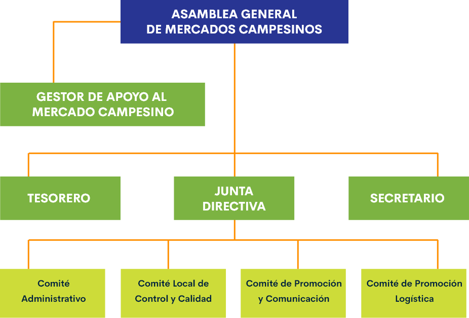Igualmente, existen mercados de mayor complejidad como Corabastos o la Plaza de Mercado Paloquemao en la ciudad de Bogotá, Colombia.
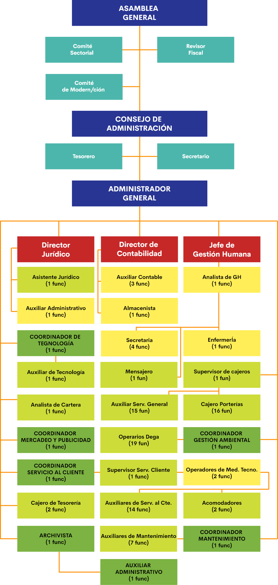
2.7 Inventarios
El inventario es, por lo general, el activo mayor en sus balances generales, y los gastos por inventarios, llamados costo de mercancías vendidas, son usualmente el gasto mayor en el estado de resultados.
Aplicabilidad o funciones de los inventarios
Los inventarios son indispensables dentro de cualquier explotación agropecuaria, ya que muestran la cantidad, estado, ubicación e información de cada producto con que cuenta la empresa en un periodo determinado . Para que un inventario sea funcional se debe realizar periódicamente y diligentemente por el funcionario que tenga a su cargo esta labor. Los inventarios deben estar clasificados de acuerdo a su función dentro del ciclo productivo y necesidad, ya sea bien material, materia prima, productos en bodega o en ciclo, elementos que se deban registrar en medio físico o archivo digital de acuerdo a cada línea de producción y comercialización que facilite realizar una mejor programación de las actividades requeridas.
Planificación de inventarios
Los inventarios se planifican de acuerdo al tamaño de la producción y necesidad de cada empresa agropecuaria. De acuerdo esto, representa costos altos y realizan efectos importantes sobre todas las funciones principales de la empresa. Cada función tiende a generar demandas de insumos particulares a su actividad económica y requerimientos técnicos. En el sector agropecuario se pueden organizar inventarios de acuerdo con su actividad económica o ciclos productivos así:
Inventario de ventas: están relacionados con el stock de producción y se requiere de inventarios elevados para hacer frente con la demanda y exigencias del mercado.
Inventario de producción: este es el más importante del sector agropecuario, ya que se necesitan elevadas cantidades de materias primas para garantizar la obtención de productos en su ciclo productivo; Se debe contar con un remanente grande de insumos para cumplir con los requisitos de producción y reducir el riesgo de sobrecostos por aumento de precios, garantizando niveles de producción estables.
Inventario de compras: al realizar compras elevadas de insumos se reducen los costos por volumen, transporte y se consiguen descuentos al por mayor, reduciendo costos de producción.
Los propósitos de un inventario son planificar el nivel óptimo de inversión y mantener los niveles óptimos de planificación, con la finalidad de eliminar irregularidades en la oferta de compra y contar con materiales vigentes y en buen estado. Igualmente, con la implementación de los inventarios se realizan acciones básicas, que los gerentes deben hacer periódicamente o cuando se realicen funciones de control de inventarios. Estas decisiones se hacen para cada artículo en bodega y para identificar con veracidad la cantidad de un artículo, características, estado y posible destino.
Clasificación de inventarios
De acuerdo a las necesidades de la empresa agropecuaria se acondicionan los inventarios, de acuerdo con los requerimientos técnicos y necesidades de la organización. Basado en lo anterior, se realiza una clasificación de inventarios:
Inventario perpetuo: la principal característica de este inventario es que indica las existencias en la empresa desde que inició actividades, registrando de forma detallada qué puede servir y los productos que existen, pero que no se han dado de baja. Igualmente sirve como libro mayor auxiliar donde se llevan los registros importes del valor del bien y las cantidades físicas existentes. Los registros perpetuos son útiles para preparar los estados financieros mensuales, trimestrales o de acuerdo a su programación financiera. La empresa puede determinar el costo del inventario final y el costo de las mercancías vendidas directamente, sin tener que contabilizar el inventario.
Inventario corto: en este tipo de inventario se toma muestreo de productos de las diferentes secciones de la bodega y se ajustan las cantidades a los importes o ambos, cuando es necesario de acuerdo con la cuenta física
Inventario intermitente: este tipo de inventario se puede realizar varias veces al año. Su función es registrar existencias para la consecución de insumos o disposición de sobrante para otro proceso productivo.
Inventario final: es aquel que realiza el emprendedor al cierre del ciclo productivo, se emplea para determinar el estado patrimonial al final del ciclo productivo y después de efectuadas todas las operaciones mercantiles de dicho periodo financiero.
Inventario físico: con este inventario se identifica las existencias reales, con sus características propias de cada elemento, clases, tipos y cantidades registradas y que se encuentren dentro de la bodega en la fecha del inventario, evaluando cada una mediante una lista detallada, que al final determinará el valor de las existencias.
Dentro de un inventario, para llevar el control del mismo se emplean herramientas prácticas de lista de chequeo de producto, donde se realiza un control mediante la observación y comprobando con una lista de conteo, de peso o a la medida real obtenida. También se puede calcular el inventario mediante un listado del stock existente. La realización de este inventario tiene como finalidad, convencer a los auditores de que los registros representan fielmente el valor del activo principal.
Para toda empresa es importante realizar los inventarios, ya que esto facilita el tener información actualizada durante todo el periodo contable y durante diferentes periodos contables, de manera que resulte factible comparar los Estados Financieros de diferentes periodos.
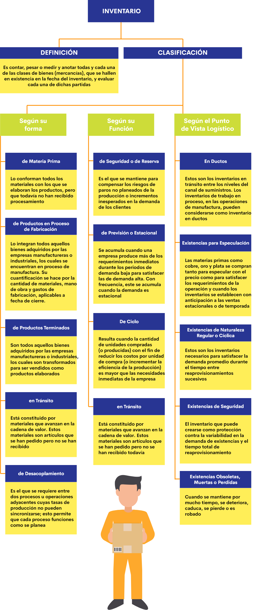
2.8 Tecnologías de la Información y la Comunicación
La cultura en el sector agropecuario, en cuanto a la utilización de tecnología y TIC es baja, ya que hay que hacer algún tipo de inversión en el uso e implementación de herramientas tecnológicas en los predios, ya sea para cultivos o ganadería, a fin de conseguir mejorar los niveles de eficiencia, productividad y rentabilidad.
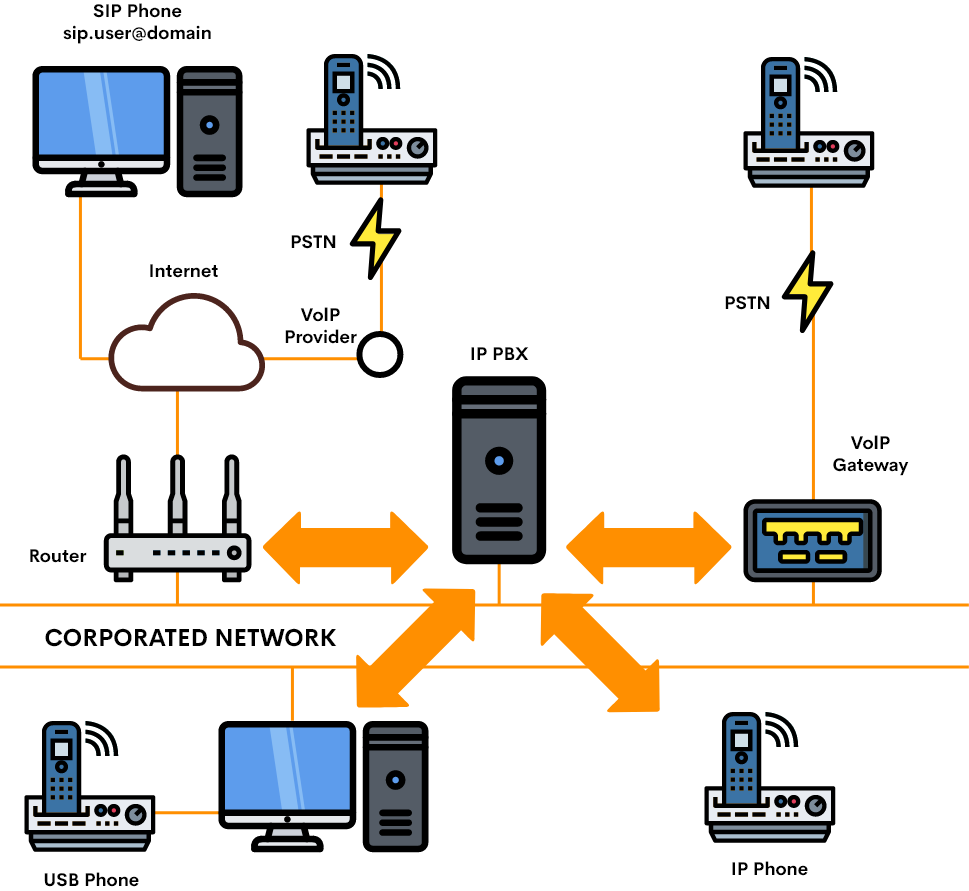Ahora bien, la utilización de la tecnología en el sector agropecuario, permite el análisis individualizado de las explotaciones, lo que da lugar a su crecimiento. Además, mantienen el control de los cultivos, detectan la falta de fertilizantes o agua, localizan enfermedades y plagas, supervisan áreas fumigadas, obtienen imágenes de alta resolución y permiten conocer las propiedades del suelo.
Garantizar la rentabilidad de la producción agrícola y el flujo de caja, así como aumentar la previsibilidad del negocio y asegurar la sostenibilidad y la sucesión en la gestión son algunas de las necesidades de los productores en cualquier rubro de la economía, pero lo son, aún más, en el sector rural.
Por ello, la atención de una creciente demanda de alimentos, la cual ha sido incentivada por el aumento de la población, migración del campo a la ciudad y exigencia por alimentos sanos y sostenibles, exige producir más en cada cosecha sin dejar de lado la preservación del medio ambiental y garantizando la seguridad alimentaria y el empleo en campo, además de disminuir los costos de producción y mantener el mismo nivel de productividad. En ello juega un papel fundamental la tecnología y especialmente el software. (Farouk, 2018)
3. Diligencia del talento humano
3.1 Gestión del talento humano
Las prácticas de gestión del talento humano en empresas del sector agropecuario en Colombia, han cambiado en cuanto a sus principios y la función de los dirigentes de la organización; donde antes se caracterizaba por tener un jefe autoritario y ahora, se habla de una gestión basada en el liderazgo. El sistema de gestión humana define los principios más generales para el desarrollo y movilización de las personas, teniendo cuenta sus características y el contexto que la organización necesita para alcanzar su misión.
De acuerdo a Restrepo y Arias (2015):
El manejo directo de las personas es, y siempre ha sido, parte integral de la responsabilidad de los gerentes, los administradores y los supervisores. Una empresa u organización debe definir las responsabilidades del directivo, para cumplir con las funciones de desarrollo humano de la siguiente forma:
Promover la superación profesional de acuerdo con el puesto.
Influir en el mejoramiento del desempeño.
Propiciar la cooperación y lograr excelentes relaciones interpersonales.
Control preciso de los costes de mano de obra, lo que permitirá su uso eficiente.
Desarrollar las competencias de cada persona.
Promover excelentes condiciones de salud para el personal.
Evaluar a cada trabajador de acuerdo a su desempeño.
Ser tenido en cuenta con las necesidades del personal para el futuro.
Ubicar a las personas idóneas en el puesto adecuado. (p. 25).
3.2 Actividades primordiales de talento humano
Son actividades primordiales en la gestión del talento humano, Iniciar a los nuevos empleados en la empresa. En síntesis, la gestión del componente humano incluye todas las decisiones y acciones directivas que afectan la naturaleza de las relaciones entre la organización y sus empleados. El Sistema de gestión humana es la integración estructurada de un grupo de partes interrelacionadas entre sí, con el objetivo central de que cada integrante de la empresa se esfuerce conscientemente por la efectividad de la labor que realizan. (Becker, B., Huselid, M., Ulrich, D., 2001; citados por Restrepo y Arias, 2015, p. 25).

La gestión del talento humano nace de la necesidad de encontrar mecanismos efectivos para la administración de personal y recursos humanos dentro de las organizaciones. Ya se contaba con mecanismos que permitían la administración de la empresa, en términos de tiempo, eficiencia, productividad, costos y ganancias, pero no había un mecanismo especializado para trabajar con el personal, dentro de la organización, sin tener en cuenta solo su productividad y eficiencia, sino pensando en ellos como seres humanos que tienen una vida personal y familiar que también afecta o mejora su desempeño laboral. Gracias a esto nacieron en las empresas los departamentos de recursos humanos, cuyo principal objetivo es ayudar a que tanto los trabajadores como las organizaciones logren sus metas. En el curso de su labor, los departamentos de recursos humanos enfrentan numerosos desafíos que surgen de las demandas y expectativas de los empleados, de la organización y de la sociedad (Werther, 2001; citado por Restrepo y Arias, 2015, p. 24).
Así mismo, deben contribuir a que la empresa alcance sus metas, dentro de parámetros éticos y en forma socialmente responsable. El término recursos humanos se refiere a las personas que componen una organización. La importancia de las labores de recursos humanos se hace evidente cuando se toma conciencia de que los seres humanos constituyen el elemento común a toda organización, en todos los casos son hombres y mujeres quienes crean y ponen en práctica las estrategias e innovaciones de sus organizaciones. “Los recursos materiales hacen las cosas posibles, pero las personas las convierten en realidades” (Nuñez, 2013; citado por Restrepo y Arias, 2015, p. 24).
3.3 Reclutamiento del personal
El reclutamiento de personal y la adecuada selección de los trabajadores idóneos para el cumplimiento de los objetivos misionales de la unidad productiva, es un reto importante, ya que no existen soluciones fáciles para esta realidad, porque cada situación es única. El empleador o analista que está buscando contratar nuevos trabajadores, debe contar con elementos que identifiquen fácilmente los perfiles deseados y que contribuyan adicionalmente en el crecimiento de la empresa o como mínimo, que cumpla sus obligaciones a desempeñar siendo: innovador, persistente y realista.
Con respecto al personal en la Empresa Agropecuaria, muchos coinciden en que existe un vacío con respecto a calidad y cantidad de mano de obra, lo que se convierte en un cuello de botella para los resultados de las diferentes actividades que se realizan dentro de un establecimiento. Por tanto, se debe tener en cuenta que, al elegirlos, estos cuenten con las características descritas, buscando siempre un crecimiento para la empresa como ya se nombró.
3.4 Selección del personal
Seleccionar a la persona indicada en la posición correcta, es un proceso decisivo para el éxito de la empresa. Para poder llegar al candidato indicado se deben considerar las necesidades de la empresa sin desconocer las destrezas, los rasgos de personalidad y las habilidades del candidato que deben ser tenidas en cuenta, para elegir a la persona idónea.
Si el empleador realmente capta las necesidades del empleo, sabrá encontrar a la persona que realmente empareje mejor con el puesto. Determinando primero el tiempo requerido para ejercer la labor; es decir, si será para cubrir tiempo completo, medio tiempo o por horas, También, debe establecer si el empleo es de carácter temporal o definitivo, indicando aspectos de trabajo y funciones a desempeñar dentro de sus labores diarias. Igualmente, se debe describir los requisitos físicos e intelectuales que el empleado debe tener, junto con las habilidades, las destrezas y los conocimientos requeridos para ejercer su labor con eficiencia y eficacia.
En resumen, para la selección y contratación del personal idóneo, lo más importante es tener en cuenta las necesidades de la empresa, contratar empleados que sean capaces de crecer y expandirse con su operación, trabajar en equipo, tener trabajo colaborativo, responsabilidades de gestión y compromiso con la entidad.
En la actualidad, el sector agropecuario en Colombia se encuentra atravesando infinidad de dificultades, entre las que se destacan aspectos sociales, económicos, políticos, de desplazamiento, delincuencia, etc. Aspectos que conlleva el desplazamiento social con la migración de los campesinos a las ciudades o a realizar otra actividad. Fenómeno que ha contribuido en aumentar la tasa de desempleo en el país.
Por otra parte, los pequeños productores o Mipymes de zonas rurales que requieren contratar trabajadores para ampliar sus actividades comerciales, no encuentran personal capacitado que cumpla con esta demanda laboral, ya que algunos se han vinculado a empresas de otro sector económico que le ofrece mejores garantías. La mano de obra calificada en las actividades agropecuarias ha disminuido notoriamente debido a falta de garantías laborales, los bajos salarios, las condiciones de horarios laborales, el maltrato laboral y la carencia de oportunidades.
Los métodos de contratación de personal de mayor éxito utilizados por los empleadores agrícolas, son por medio de los comentarios de voz a voz o por referencias de los empleados actuales o anteriores.
Cabe destacar, que otros métodos de contratación incluyen las agencias gubernamentales, escuelas, universidades y colegios, los anuncios en diarios, las agencias privadas, y los portales en Internet.
Para que un empresario en las actuales condiciones socioeconómicas del país, pueda realizar nuevas contrataciones de personal mediante su departamento de talento humano, debe ofrecer garantías que permitan al nuevo candidato esforzarse para ser vinculado allí donde sea valorado, respetado, se sienta satisfecho con los ingresos percibidos y esté en confort para desarrollar sus actividades para las que fue contratado. Cuando una empresa del sector adquiere una buena reputación, los trabajadores se sienten orgullosos de pertenecer a ella, facilitando a futuro reclutar nuevos talentos por la imagen corporativa que tiene en su entorno. La reputación del empresario también facilita la apertura de oferta laboral, con la que llegan un gran número de candidatos y de esta forma se puede seleccionar el mejor talento para cubrir la vacante de acuerdo a los requerimientos técnicos y perfil del trabajador.
La evaluación de los candidatos puede ser una tarea difícil para los analistas. Una posición complicada requerirá observar varias habilidades que no pueden ser evaluadas a través de un solo método. Para determinar si un candidato tiene todas las herramientas necesarias para una posición, es una buena idea evaluar a los candidatos a través de una serie de herramientas de evaluación. En muchos casos, un obstáculo debe ser "limpiado" antes de que un candidato pueda avanzar en el proceso de selección. Estos deben ser creados con el análisis del empleo y las especificaciones en mente. Algunos ejemplos de obstáculos son los siguientes:
Las aplicaciones escritas. Sirven para recoger la información esencial y calibrar la capacidad del candidato para leer y escribir. Estas formas pueden utilizarse para reducir un gran campo de los candidatos sobre la base de requerimientos, es un buen primer obstáculo.
El departamento de talento humano de una empresa del sector agropecuario, puede emplear como herramienta de preselección y clasificación de los nuevos candidatos, la prueba escrita con la que fácilmente se puede identificar todo tipo de conocimiento técnico, procedimentales y de manejo. Esta prueba escrita puede ser con preguntas cerradas, de selección múltiple, con una sola respuesta, de repuesta abiertas, elaborar un ensayo, con libro abierto, etc. El candidato es citado a presentar la prueba establecida, previo al análisis de su hoja de vida. Para ello, es citado a presentar la prueba y de acuerdo con el resultado podrá continuar con el proceso de selección y el empresario tomar decisiones lo más acertado al perfil requerido.
Las pruebas basadas en computadoras también pueden ser una herramienta de referencia y selección.
De acuerdo al nivel desempeño del perfil a contratar, si este lo amerita y dentro de sus actividades requiere la constante interlocución con su entorno, se puede emplear como medio selectivo una prueba oral, en las que directamente por su desempeño se evalúa la capacidad de comunicación del aspirante, su experiencia técnica e igualmente infiere en el posible manejo en dar instrucciones a otros trabajadores. Otra técnica empleada es la de poner a prueba al candidato en la resolución de problemas, suministrando un problema hipotético para que este aporte líneas de solución y guíe el camino a dar solución al problema argumentado.
Las entrevistas. Permiten a los empleadores y a los potenciales candidatos poder llegar a conocerse mutuamente. Las entrevistas bien programadas, que solicitan preguntas abiertas, son las que mejor funcionan. Por supuesto, algunos candidatos pueden simular ser muy impresionantes durante la entrevista, y decepcionar una vez en el trabajo. Otros candidatos por mostrarse muy nerviosos en una entrevista, pueden perder su oportunidad de brillar. Esta es la razón por la que es práctico combinar una entrevista con un examen práctico.
Pruebas prácticas. Exigir al candidato llevar a cabo una o más de las habilidades que el trabajo requiere, a través del planteo de una situación de burla. Estas pruebas permiten conocer cuáles son sus capacidades/habilidades para realizar las tareas. Estas pruebas también demuestran el pensamiento de los candidatos, donde se conoce cuáles son las tareas de su prioridad y si mantienen la calma por si algo sale mal.
Es importante hacer hincapié en la seguridad durante una prueba práctica. La prueba debe ser estrictamente supervisada. Si el candidato está en riesgo de lesionarse a sí mismo o cualquier otra persona en algún momento, la prueba debe interrumpirse inmediatamente.
Referencias. Pedirle al candidato que proporcione los nombres, números de teléfono y mails de sus empleadores de anteriores trabajos.
Adaptado del portal web Agrositio (2009).
3.5 Bienestar laboral
Se entiende por bienestar laboral a todo programa que se implementa para mejorar la calidad de vida de los trabajadores en el ámbito profesional y familiar.
En las empresas del sector agropecuario, el bienestar laboral de los trabajadores en las distintas áreas de la unidad productiva, se ha transformado en el beneficio del éxito de la organización. Hay que resaltar que el factor humano es el capital intelectual que hace posible el cumplimiento de las metas y objetivos propuestos.
Actualmente, la productividad de los trabajadores está ligada a las compensaciones e incentivos que ofrece la organización, lo cual genera espacios de crecimiento en todos los aspectos y, a su vez, redunda en mejores resultados para el negocio. De otro lado, con la implementación de la Ley 100 de 1993 “Ley de la seguridad social integral”, parte de los trabajadores del sector agropecuario que se encuentran formalizados se han visto beneficiados en algunos principios que garantizan el cubrimiento en salud, pensión y caja de compensación familiar.
Todo empleador de la producción agropecuaria debe garantizar que el personal contratado cuente con buen estado de salud, llevando a cabo exámenes preocupacionales al momento previo al ingreso y la firma del contrato, los cuales se deben realizar una vez al año. Igualmente, el trabajador tiene la obligación de recibir capacitación en higiene, salud y riesgos ocupacionales, BPG, manejo de alimentos, manejo y movilización de animales, bioseguridad, labores propias del cargo, entre otras que son requeridas para el ejercicio de sus funciones.
El empleador está en la obligación de proporcionar al trabajador todos los implementos necesarios para el ejercicio de su labor como es el overol, botas, guantes, y mascarillas; garantizando la preservación de la salud y el bienestar laboral y a su vez, cumpliendo con la normatividad vigente.
De igual forma, para procurar por el bienestar de los trabajadores es necesario proporcionar acceso a baños, áreas de descanso, cocina, guardarropa , duchas. Además, contar con botiquín y un área de primeros auxilios con personal capacitado.
En la actualidad, existe mucha rotación de personal en las fincas, por no contar con las garantías descritas anteriormente y que son exigidas por los trabajadores; dificultando conseguir mano de obra calificada y comprometida con el campo para el ejercicio de esta profesión. Fenómeno que entorpece la productividad agropecuaria y facilita contratar personal sin experiencia a un menor costo laboral. Actividad que va en retroceso del bienestar laboral de los trabajadores.
Igualmente, se ve afectada directamente la unidad productiva en sus actividades cotidianas, debido a los constantes cambios de personal. El cual inicialmente se debe capacitar e instruir correctamente para su óptimo funcionamiento en las agropecuarias y misionales de la organización.
Por último, para recuperar este reglón de la economía y dignificar al trabajador agropecuario se debe garantizar el cumplimiento de la normatividad vigente en cuanto a su bienestar, mejorar sus ingresos, garantizar carrera administrativa dentro de la empresa, ser valorado como individuo y facilitar el ingreso de las nuevas generaciones al sector, las cuales llegan con nuevas ideas, proyectos, emprendimientos y desafíos, que rompen con el modelo tradicional. Involucrando con este nuevo modelo, investigación, tecnología, innovación se construye un futuro promisorio y acorde con las necesidades de la humanidad.
4. Instrumentos financieros de patrimonio de la empresa agropecuaria
4.1 Empresa
Existen diversas descripciones de lo que es una empresa y el concepto más acertado a la actividad agroempresarial, es el que la considerada como “La unidad económico-social, integrada por elementos humanos, materiales y técnicos, que tiene la finalidad de obtener utilidades a través de su participación en el mercado de sector primario de bienes y servicios”. Para esto, hace uso de los factores productivos como trabajo, tierra y capital.
Generalmente, una empresa está formada por lo menos por cuatro áreas funcionales básicas: administración, producción, mercadeo y finanzas. Pero, de acuerdo a su tamaño y complejidad puede estar formada por muchas más áreas (investigación, recursos humanos, estrategia, etc.).
En el siguiente gráfico se describen algunas áreas a cargo de la administración:
Por su parte, en la siguiente figura se resumen los elementos constitutivos de una empresa:
La importancia de una empresa radica en inculcar los valores a los propios empleados, de forma que estos afecten a las relaciones que se mantienen con todos los trabajadores y los clientes. Estos valores o formas de comportarse no impositivos, simplemente contribuyen al proceso de autoformación personal y fomentan la imagen empresarial con el comportamiento de sus empleados.
Las empresas del sector agropecuario son muy importantes dentro del desarrollo económico, social y político de un país; ya que contribuyen a la compensación de la necesidad de alimentos, la prosperidad de los ciudadanos, la industrialización de productos y el desarrollo económico del país. Es de destacar, que se otorgan subsidios para las empresas legalmente constituidas y que realicen actividades en el sector cuya finalidad sea generar calidad, fertilidad y el desarrollo rural en este renglón de la economía, para que la creciente población se nutra de manera regular y sana.
Requisitos de constitución de una empresa en Colombia
En el Plan Nacional de Desarrollo diseñado para el Gobierno del Presidente Iván Duque, titulado Bases del Plan Nacional de Desarrollo 2018-2022. Pacto por Colombia pacto por la equidad, en el numeral II. Pacto por el emprendimiento, la formalización y la productividad: una economía dinámica, incluyente y sostenible que potencie todos nuestros talentos. Describe el crecimiento económico se potenciará con un entorno favorable a la creación y consolidación de un tejido empresarial sólido y competitivo.
Con la premisa descrita anteriormente y por la falta de oportunidades laborales, esta idea se ha convertido en el deseo de muchos emprendedores en tener su propio negocio. Proceso que para la constitución de una empresa no es fácil de realizar, pero tampoco imposible. En la Cámara de Comercio de la región que corresponda se describe el paso a paso para crear formalmente una empresa. Allí recomiendan que lo primero que se debe tener en cuenta antes de realizar el proceso de conformación y legalización de una empresa, es tener muy clara la idea de negocio con la que se quiere emprender. Debe estar descrita en un plan de negocio o proyecto empresarial, para definir qué se quiere y para dónde va la empresa.
En el plan de negocio o modelo de negocio, se debe plantear la idea de negocio, describir la propuesta de valor del producto a desarrollar, los objetivos, metas, necesidades, recursos, potencial de mercado, retos, necesidades, propuesta de valor que requiere la conformación de la empresa. Esto con el propósito de ser competitivos en el mercado, darse a conocer, aprovechar oportunidades siendo creativo, innovador y atractivo para los futuros clientes.
El primer paso en todo proceso de creación de empresa es tomar la decisión de hacerlo. Para esto es indispensable fortalecer la autoconfianza y superar las barreras personales que impiden iniciar el proyecto empresarial. El emprendedor después de tener clara la idea de negocio debe acercarse a la Cámara de Comercio de su región para validarla y recibir asesoría sobre la creación y la realización de la empresa. También se puede recibir orientación por medios electrónicos.
En el proceso de formalización empresarial se debe definir qué tipo de persona va a registrar ante las autoridades dispuestas por normatividad para ello. Tanto para una empresa de carácter natural, jurídico o establecimiento de comercio, donde los requisitos y obligaciones son propios de la actividad comercial a ejercer. Se debe presentar la documentación requerida por la Cámara de Comercio y necesario para el proceso de legalización es indispensable contar con el documento de identidad, el Registro Único Tributario, el Formulario Registro Único Empresarial y Social (RUES), la Carátula única empresarial. Una vez elegido el tipo de persona que se quiere constituir, el titular debe presentar los mismos documentos que la persona natural acudir con los documentos requeridos y descritos en el siguiente enlace:
https://www.ccb.org.co/Cree-su-empresa/Pasos-para-crear-empresa/Informacion-general-para-creacion-de-empresa
Es trabajo del emprendedor conocer los ocho tipos diferentes de sociedades que se pueden constituir en Colombia y tienen una normatividad propia de las que se enumeran: Sociedad por Acciones Simplificada, Sociedad Limitada, Empresa Unipersonal, Sociedad Anónima, Sociedad Colectiva, Sociedad Comanditaria Simple, Sociedad Comanditaria por Acciones y Empresa Asociativa de trabajo.
Posteriormente y cumpliendo con la ley anti trámites , la Cámara de Comercio envía la información a la Secretaría de Hacienda Distrital con el propósito de llevar a cabo la inscripción en el Registro de Información Tributaria (RIT), siempre y cuando las actividades que va a realizar se lleven a cabo en Bogotá y estén gravadas con el Impuesto de Industria y Comercio (ICA), explicó la CCB. En paralelo se está trabajando en el pre Rut ante la DIAN, el cual se oficializará después de obtener el certificado de existencia y representación legal expedido por la Cámara de comercio.
Por otra parte se debe definir la razón social o nombre de la empresa, ya que es fundamental, pues es la identificación de la empresa y hay que consultar que no exista homonimia o nombres similares; es decir, que esta razón social no esté en uso y pueda utilizarse.
Hay que tener presente que en este punto se debe cancelar un impuesto de registro, que se liquida con una tarifa del 0,7% o 0,3% según sea el caso, dependiendo del valor económico incorporado en el documento. El impuesto debe cancelarse al momento de solicitar el registro del documento.
Una vez constituida la sociedad, se deben inscribir los libros de actas del máximo órgano social asamblea general de accionistas, junta de socios, asamblea de asociados etc. y el registro de socios o accionistas o asociados exigidos por la ley para las sociedades comerciales, de acuerdo con la CCB.
Para realizar el registro en CCB en necesario conocer por parte del emprendedor los tipos de empresa existentes como se mencionó anteriormente en los ocho tipos de sociedades. En el caso particular para una empresa del sector agropecuario, esta actividad económica se puede clasificar dentro del sector primario que corresponde a las actividades que obtienen los recursos de la naturaleza, como las agrícolas, pesqueras o ganaderas. También es posible realizar actividades en el sector secundario, ya que se puede realizar algún tipo de transformación de procesos industriales para comercializar con valor agregado un producto.
Es importante definir la otra clasificación válida para las empresas de acuerdo a su constitución jurídica. Si la empresa es individual; ósea, si su dominio pertenece a una sola persona o por el contrario hace parte de algún tipo de sociedad que puede estar conformada más de una persona. En este tipo de sociedades a su vez puede ser una sociedad anónima, sociedad de responsabilidad limitada, sociedad de economía social compartida caso de cooperativas, sociedad comandita, entre otras.
Las empresas también pueden definirse de acuerdo a la procedencia del capital que la conforma. Así, se encuentran empresas privadas cuyo capital está en mano de particulares, otro tipo de empresas son las de capital públicas que son las entidades controladas por el Estado. Existen algunas de carácter mixto donde su capital es compartido por particulares y por el Estado.
La administración de empresas agropecuarias es una actividad que hace parte de las ciencias sociales dedicadas al estudio de la organización, donde se gestionan recursos, procesos y los resultados de sus actividades.
Hoy en día crear una empresa es fácil gracias a las tecnologías de la información y la comunicación, donde se ha facilitado la realización de los trámites requeridos y se pueden realizar desde casa a través de Internet. Se debe tener presente que la facilidad de conformación de una empresa no reemplaza el compromiso, dedicación, gestión y desarrollo de la dedicación para volverla rentable y exitosa
En síntesis, el emprendedor lo primero que debe definir con mucha objetividad es las características de la empresa que desea constituir. Esto incluye la idea de negocio, el tipo de organización, la actividad económica a desarrollar, el análisis del sector y otros de importancia. Teniendo definido estos elementos se requiere hacer un estudio de mercado para saber si ya existen empresas que realizan la misma actividad y qué tipo de productos comercializan. De ser así, es importante saber si el mercado está saturado o existe un espacio en el cual se pueda ubicar los productos.
Llegado el caso, si con el análisis anterior se concluye que no es viable continuar con el emprendimiento propuesto, continuar con esta idea es por lo general ir directamente a un fracaso rotundo que podría evitarse reconociendo con humildad que la idea de negocio planteada no es adecuada para el contexto económico y social del momento. Además de evitar incurrir en gastos inoficiosos. Si del mismo planteamiento surge que es viable la idea de negocio, se puede afirmar que se inicia el nacimiento de una empresa. Los aspectos técnicos, económicos como parte estructural de la empresa son importantes; pero, se debe adicionar el compromiso, dedicación, paciencia necesaria para ver hecha realidad la legalización de la empresa, que se inició desde una idea en papel y superando los diversos obstáculos en todas las etapas para culminar con una empresa líder en el mercado.
Costos a tener en cuenta
El emprendedor después de realizar con éxito el proceso de legalización ante la Cámara de Comercio de su región, debe tener presente que existen por normatividad compromisos fiscales que debe formalizar ante la DIAN y que sin ellos, no puede iniciar sus actividades comerciales: la inscripción en el RUT, RIT, instrumento de firma electrónica para el Representante Legal, factura electrónica, declaraciones tributarias, impuestos como IVA, el ICA, obligaciones bancarias y demás que se requieran en cumplimiento de la normatividad vigente.
4.2 Legislación contable
En Colombia existen normas legales que establecen y regulan el funcionamiento de las actividades comerciales y realizan el control fiscal de las empresas. En lo referente al marco jurídico de la contabilidad, la Ley 145 de 1960, en los artículos que aún siguen vigentes y el Decreto 2649 de 1993, describen en su cuerpo los principios y normas que deben observar y guardar para la transparencia de la contabilidad, la cual para que tenga validez como prueba y para que cumpla con sus objetivos, debe ajustarse a lo dispuesto por el Decreto 2649 de 1993.
Mediante la Ley 43 de 1990 se reglamenta la profesión de Contador público y define que es bajo su responsabilidad como profesional que se debe llevar la contabilidad en debida forma, esto es que debe asegurarse que la contabilidad cumpla con todas las normas vigentes que la reglamentan.
El Código de Comercio es quien reglamente la obligación de llevar contabilidad y determina en su normatividad que tipo de personas naturales o jurídicas deben llevar contabilidad de acuerdo con sus ingresos y determina los parámetros que deben registrar los contadores en los respectivos libros para facilitar su control por las entidades encargadas por normatividad de regular y vigilar la contabilidad en Colombia, en especial la Superintendencia de Sociedades y la DIAN ejerciendo un estricto control en cómo se debe llevar la contabilidad. Todos los decretos, normas y circulares hacen posible el cumplimiento del correcto manejo contable.
La entidad encargada oficialmente de opinar y conceptuar sobre temas contables, es la Junta Central de Contadores por medio del Instituto Técnico de la Contaduría.
En el siguiente gráfico se presenta un modelo de contabilidad en Colombia:
4.3 Contabilidad
La contabilidad permite registrar y clasificar diariamente los hechos económicos que realiza una empresa y gracias a este registro es posible conocer el estado financiero y económico de la organización empresarial. Por medio de esta relación confiable, es que los emprendedores definen a futuro en donde van a invertir sus ganancias y cómo serán distribuidas en beneficio del posicionamiento de la empresa. La información financiera debe ser confiable, comprensible, objetiva, razonable y oportuna.
Como se describe en el párrafo anterior, los registros contables son entregados a los administradores de la empresa, como insumo adicional del resultado obtenido en manejo eficiente de las operaciones productivas, iniciando con la planeación, el control y la toma de decisiones.
Esta información también es requerida por los entes gubernamentales que realizan la función de vigilancia y control. La información suministrada por el departamento de contabilidad o en su defecto por el contador, sirve para determinar el monto de los impuestos de renta y complementarios y demás tributos que la empresa está obligada a cancelar al Estado Y a los acreedores a entidades crediticias que la requieran para determinar su capacidad de pago.
La complejidad en muchas anotaciones contables que se deben registrar se hallan obligatoriamente codificadas por normatividad imponen requisitos formales de cómo se debe llevar la teneduría de libros.
Con la bancarización de las transacciones comerciales se ha generado la necesidad de registrar todo tipo de operaciones bajo un código bancario que facilitan el flujo de dinero en la entidad.
Como resumen, se puede definir que la contabilidad es una ciencia que se ocupa de sistematizar todas las operaciones mediante un proceso sistemático y metodológico que proporciona una herramienta de análisis a otras dependencias especialmente a las encargadas de la economía de la empresa.
Clases de contabilidad presentes en las empresas agropecuarias
Cada empresa de acuerdo con su objeto social debe tener establecido un sistema para el manejo contable de acuerdo al tamaño y actividades que desarrolla en el cumplimiento de sus actividades rutinarias y de naturaleza jurídica, sin desconocer las normas legales vigentes para este fin. Así, se encuentra que se puede dividir el manejo de la contabilidad en función de: 1. Su naturaleza. 2. Actividad económica y 3. Campo de la empresa al que se dedica.
El manejo contable que debe realizar una empresa del sector agropecuario de acuerdo con su naturaleza jurídica, es la destinada a las empresas privadas y en relación a su actividad económica se debe llevar una contabilidad especializada en actividades del sector agropecuario y en el campo sobre el que se aplica se puede llevar uno de los siguientes tipos de contabilidad:
Contabilidad fiscal: dirigida específicamente a las obligaciones tributarias y la gestión financiera para el pago de los correspondientes impuestos por parte de la empresa.
Contabilidad gerencial: es la tipología contable más enfocada al abastecimiento de datos de la empresa para los administradores y la toma de decisiones. También es llamada contabilidad administrativa, aunque esta última es más amplia. La contabilidad gerencial está enfocada a los equipos directivos.
Contabilidad de costos: es la encargada de crear un sistema de información que permita conocer y analizar los costos de producción dentro de cada ciclo productivo.
Contabilidad financiera: este tipo de contabilidad analiza todo lo que tiene que ver con los ingresos, gastos, activos y pasivos financieros de la empresa que es aplicable a una empresa agropecuaria.
A través del siguiente gráfico, se describen los elementos de un sistema contable que serán explicados de manera detallada por lo expuesto en el portal web de Elementos de un sistema contable (s.f.):
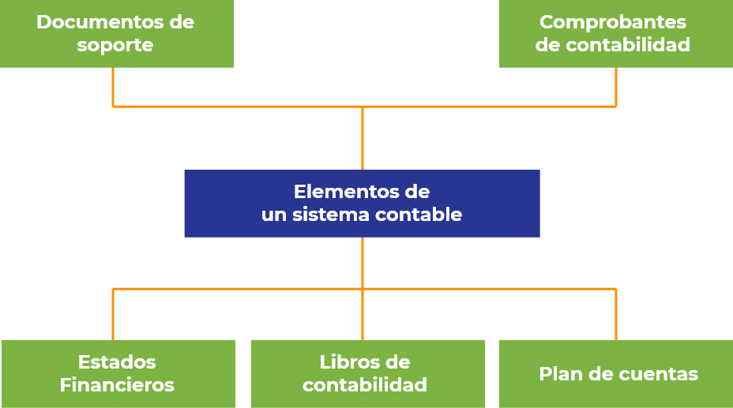
Documentos de soporte
Son documentos que dan evidencia de la realización de transacciones u operaciones comerciales, estos tienen carácter de legalidad delante de la empresa y terceros.
Dan constancia de operaciones realizadas.
Informan las operaciones efectuadas.
Sirven como base de datos para registros contables.
Facilitan tareas de fiscalización y control fiscal
Los documentos son: facturas, recibos de caja, comprobantes de egreso, facturas de servicios públicos y privados, consignaciones bancarias.
Comprobante de contabilidad
Son de carácter interno en las empresas y permiten el registro de las transacciones en los libros de contabilidad.
Deben elaborarse con base en los soportes de orden interno o externo.
Debe tener numeración consecutiva, dejando constancia de personas que lo elaboraron y aprobaron, fecha, origen, descripción, cuantía de operaciones, cuentas afectadas con código y nombre en el PUC.
Plan de cuentas.
Conjunto de cuentas con un código y nombre, que describen categorías en las que se registran las operaciones. Las NIIF no consideran un plan de cuentas.
Libros de contabilidad
Cada país determinará que libros deben inscribirse en la Cámara de Comercio , en Colombia no se inscriben, pero se conservan como práctica contable debido a que no están reconocidos en los Códigos de Comercio. Los libros elaborados manualmente que se llevan en la práctica comercial se clasifican como:
Libro diario.
Libro mayor.
Balances.
Libro de inventarios.
Estados financieros
Son informes financieros clasificados como:
Generales: balance general, estado de resultado, estado de flujos de efectivo, estado de cambios en la situación financiera, estado de cambios en el patrimonio.
Bajo las NIIF se consideran cuatro estados de propósito general: estado de situación financiera, estado integral de resultados, estado de flujos de efectivo, estado de cambios en el patrimonio.
Los estados financieros también muestran los resultados de la gestión llevada a cabo por la gerencia, dan cuenta de la responsabilidad en la gestión de los recursos confiados a la misma (S2.3).
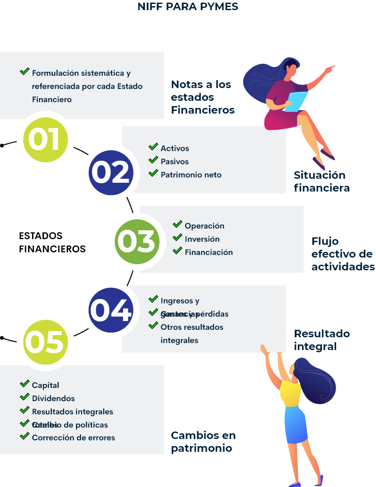4.4 Contabilidad de costos
Para una empresa del sector primario el manejo de los registros contables es indispensable, especialmente en aquellos que le permiten de forma acertada, llevar el control de la información registrada y conocer los costos de producción ejecutados durante un ciclo productivo. Como es el caso puntual de la contabilidad de costos, la cual ofrece información real, clara y concreta de todos los costos y gastos que tiene una empresa para producir, de acuerdo a sus características técnicas y requerimientos de mercado.
Igualmente, gracias a la contabilidad de costos se puede establecer los costos de producción de un elemento con su correspondiente valor monetario de la materia prima y la mano de obra requerida para la obtención del mismo. Lo que contribuye en tener el control sobre la producción total proyectada y así llevar a la venta el producto obtenido en el momento de mayor demanda en el mercado.
En síntesis, el costo de producción es el valor total que se paga para la obtención del producto. Los costos de una empresa se relacionan con las actividades que se realizan a diario. Es conveniente realizar una contabilidad de costos, así se podrá evaluar el trabajo administrativo y gerencial. Siempre es necesario comparar los ingresos de la empresa y los costos que han proyectado previamente. En cuanto a los productos, se deben tener en cuenta los materiales o recursos utilizados en su producción, de manera directa e indirecta; así como la mano de obra y los costos de producción.
Con respecto a las actividades que se realizan en torno a la obtención de un producto, se debe tener en cuenta la manufactura; es decir; de la producción, el mercado (promoción y venta del producto), los costos administrativos, salarios, etcétera y financieros.
Hay que diferenciar lo que son los costos de los gastos. El costo es el valor monetario de la materia prima y la mano de obra. Los gastos corresponden al tiempo de la producción, la distribución y la administración de la empresa.
Basado en lo anterior, en el siguiente gráfico se resume la contabilidad de costos:
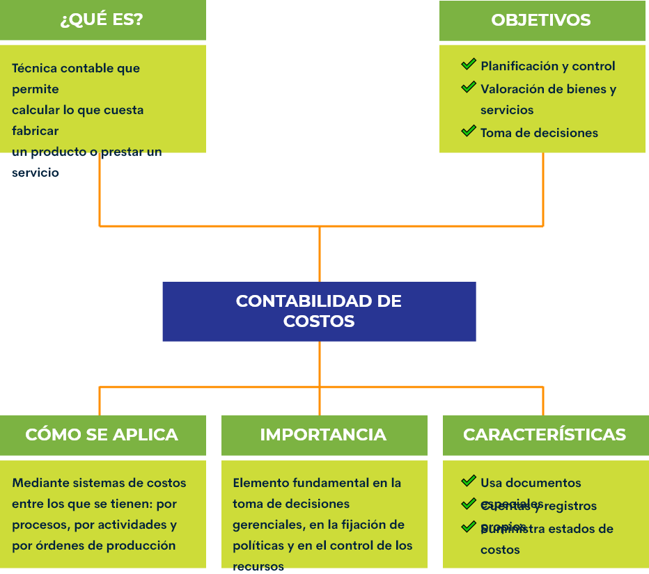
4.5 Contabilidad de inventarios
Dentro de una empresa del sector primario, la contabilidad de inventarios se define como los registros contables obtenidos del conjunto de productos o artículos que tiene la empresa para comercializar en un periodo económico determinado, detallando en forma ordenada y valorativa todos los productos existentes dentro de la bodega de almacenamiento y requeridos para el cumplimiento de sus objetivos en un determinado ciclo productivo.
Existen numerosas técnicas de valoración de inventarios, sin embargo, las comúnmente utilizadas por las empresas agropecuarias en la actualidad dada sus necesidades son:
Identificación específica: es una forma de valorar los inventarios de mercancías de la empresa, calculando el costo, determinando su nivel de utilidad y fijando la producción con su respectivo nivel de ventas. El costo de los materiales utilizados se calcula multiplicando la cantidad usada por el precio específico de cada material.
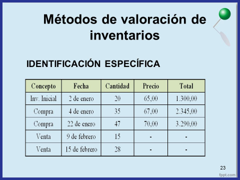Primeros en Entrar Primeros en Salir – PEPS: este método es un sistema de inventarios que consiste en dar salida a los primeros productos que fueron adquiridos. Su objetivo es que el stock se renueve constantemente y no se queden productos de fechas de vencimiento anteriores.
Últimos en Entrar Primeros en Salir – UEPS: este método es un sistema de inventarios que consiste en disponer de los últimos productos que fueron adquiridos e ingresados a la bodega y por sus características deben ser incorporados al proceso productivo rápidamente.
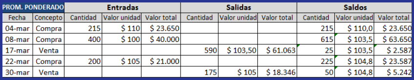Costo promedio constante o Promedio Ponderado: el promedio ponderado es sistema de inventarios que permite calcular el costo promedio de los productos con existencias en bodega para determinar el costo de venta.
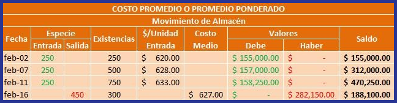Kardex: es un documento administrativo de control, el cual se da como un instrumento de registro estructurado que indica la existencia de productos o mercancía en un lugar específico de la empresa.
El kardex es un registro estructurado de la existencia de mercancías en el depósito de la empresa. Su control puede ser manual o digital. Es la mejor herramienta para conocer las existencias en tiempo real de productos en la bodega.
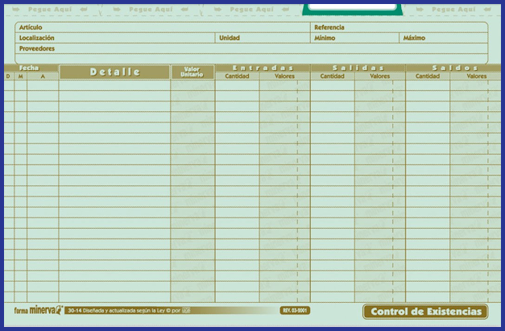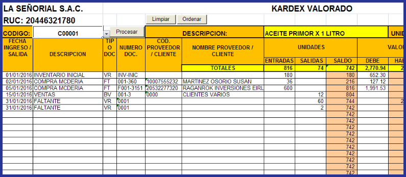Glosario
Empleador:que da empleo a otros.
Insumo:bien de cualquier clase empleado en la producción de otros bienes.
Inventario:lista ordenada de bienes y demás cosas valorables que pertenecen a una persona, empresa o institución.
Mercadeo:conjunto de operaciones por las que ha de pasar una mercancía del productor al consumidor.
Mercado:conjunto de actividades relacionadas con la compra y venta de mercancías y servicios.
Operario:persona que tiene un oficio de tipo manual o que requiere esfuerzo físico, en especial si maneja una máquina en una fábrica o taller.
Organigrama:representación gráfica de la estructura de una empresa o cualquier otra organización, que incluye las estructuras departamentales y, en algunos casos, las personas que las dirigen, hacen un esquema sobre las relaciones jerárquicas.
Personal:que se realiza con la participación de una persona físicamente presente y no utilizando medios indirectos, como el teléfono o la mediación de otras personas.
Referencias bibliográficas
Agrositio. (2009). Cómo reclutar y seleccionar empleados para el sector Agropecuario. https://www.agrositio.com.ar/noticia/106584-como-reclutar-y-seleccionar-empleados-para-el-sector-agropecuario
Arias, F. J. y Restrepo, F. (2015). Las prácticas de gestión del talento humano en empresas agropecuarias del sector bananero en Colombia. Journal of Agriculture and Animal Sciences, 4 (2), 20-32. https://www.academia.edu/22061049/Las_pr%C3%A1cticas_de_gesti%C3%B3n_del_talento_humano_en_empresas_agropecuarias_del_sector_bananero_en_Colombia
Cámara de Comercio de Bogotá. (2020). Pasos para crear empresa. https://www.ccb.org.co/Cree-su-empresa/Pasos-para-crear-empresa
Departamento Nacional de Planeación (DNP). (2019). Bases del Plan Nacional de Desarrollo 2018-2022. Pacto por Colombia pacto por la equidad. https://colaboracion.dnp.gov.co/CDT/Prensa/PND-2018-2022.pdf
Farouk, Í. (2018). Controle el inventario y gestione órdenes en el sector agrícola con un solo software. Agronegocios. https://www.agronegocios.co/tecnologia/controle-el-inventario-y-gestione-ordenes-en-el-sector-agricola-con-un-solo-software-2779556
Lexico. (2020). Diccionario web.https://www.lexico.com/
McGraw Hill Education. (s.f.). La oferta, la demanda y el mercado. McGraw Hill Education.
TVAgro. (2016). Manejo Contable en una Producción agrícola. [Video]. YouTube. https://www.youtube.com/watch?v=ANAxokvWr_c
Unidad de Planificación Rural Agropecuaria (UPRA). (2020). Mercados agropecuarios. https://upra.gov.co/uso-y-adecuacion-de-tierras/mercados-agropecuarios
Fotografías y vectores tomados de https://www.shutterstock.com/ y https://www.freepik.es/
Licencia Creative Commons
CC BY-NC-SA
Ver licencia.